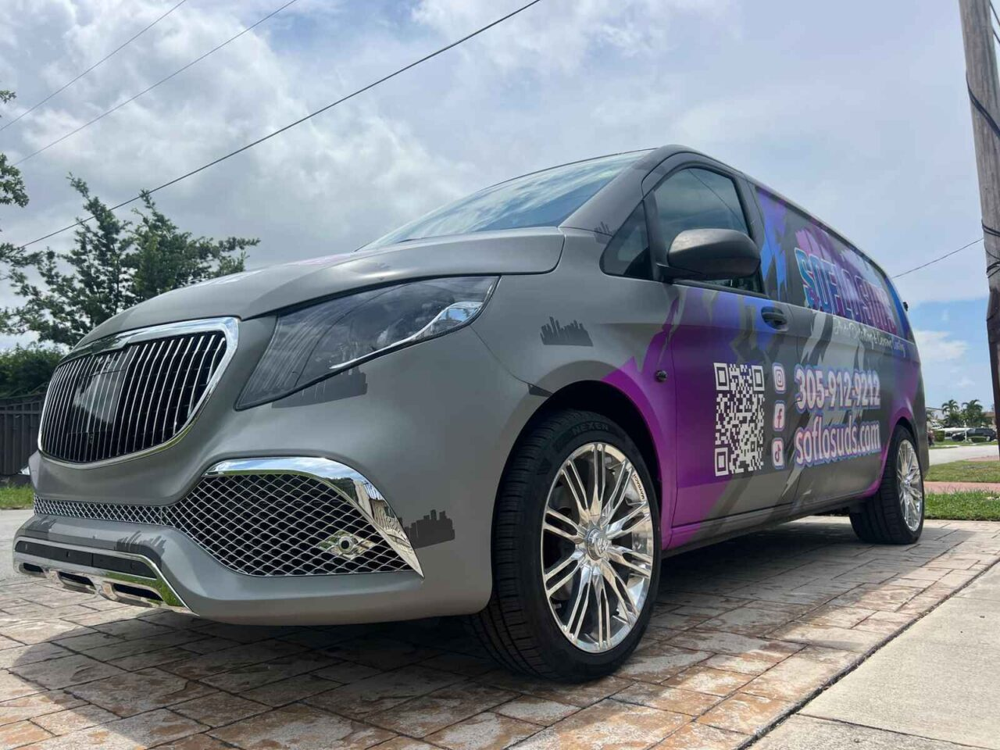

Experts With Over 5 Years Of Experience
At SoFlo Suds Auto Detailing & Ceramic Coating, our passion is in the details. With 5 years of industry experience, we deliver exceptional mobile detailing services, using the latest products and techniques. Offering hand washes, interior/exterior detailing, paint correction, and ceramic coating, we cater to all budgets and needs. Whether it’s cars, boats, or RVs, we come to you for hassle-free, premium care. Need a custom service? We’ve got you covered. Trust SoFlo Suds for a vehicle that shines, wherever you are.
Welcome to Soflo Suds Auto Detailing and Ceramic Coating, your premier destination for car detailing in Miami, FL. Our expert team is dedicated to providing top-notch detailing services that enhance, protect, and maintain the beauty of your vehicle. Whether you need a thorough clean or advanced detailing, we have the skills and tools to deliver exceptional results.
Our car detailing services in Miami are designed to address every aspect of your vehicle’s appearance, ensuring it looks and feels like new:
Experience the best in car detailing in Miami, FL with Soflo Suds Auto Detailing and Ceramic Coating. Whether you’re looking for a complete detailing package or specific services, we’re here to meet your needs. Contact us today to book your appointment and give your vehicle the care it deserves.